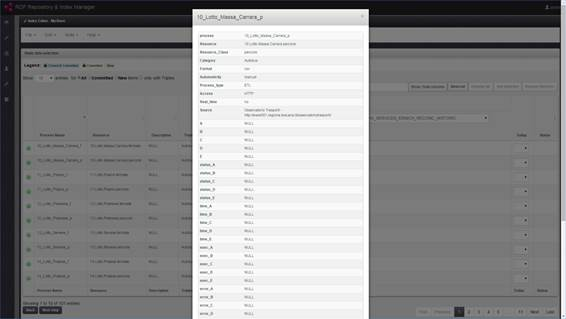
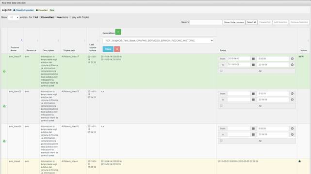

RDF Index Manager User Manual
RDF Index Manager allows the preparation of an index of RDF triples called Index Descriptor; through a special web interface like "stepping" the user is able to select different sets of triples ("dataset") to be included in an RDF store. At the end of the selection process, the user can create a script that will be used to generate and populate a new RDF Store.
1 Menu
The application provides a drop-down menu in the Menu Bar like:
The menu is structured as follows:
· File
o New - Create a new index descriptor
o Import – import an index descriptor from XML
o Open – Open an existing index descriptor
o Export – Export index descriptor in XML
o Close – Close current activity and return back to Welcome Page
· Edit
o Ontologies – Editing of Ontologies
o Static Data – Editing of Static Data
o Real Time Data – Editing Real Time Data/Historical Data
o Reconciliations – Editing of Reconciliations
o Properties – Editing of properties
· Build
o Summary – View the current data sets in the index descriptor
o Monitor – Open the building monitor
o Validate – Open the validation panel
o Build Script – Build the script for building the RDF store
o Run Script – Put the script in execution
o Status – Open the building monitor
· Help
o Welcome – Open the Welcome Page
o Help Contents – Open this Help
2 Welcome Page
At loading the application, it shows a welcome page (Figure 1) in which there are some shortcut buttons (shortcuts):
· Create a New Index Descriptor
· Import an Index Descriptor from XML
· Browse Available Index Descriptors
Figure 1 – Welcome Page
The page shows the available RDF Stores managed by the application. By clicking on their icons in the user logs on to the Manager of the store (native application)
3 Create and Edit an Index Descriptor
There are three ways of editing an Index Descriptor.
3.1 Create a New Index Descriptor
It allows the creation of a new Index Descriptor. There are 3 options:
1 Empty – An empty Index Descriptor
2 Copy – Create an Index Descriptor by copying an existing one. Data are copied by using the latest version and can be modified.
3 Clone – Create an Index Descriptor by cloning an existing one. Data are inherited by the parent index and cannot be modified.
The page contains a form to be filled with the following required fields (Figure 2):
· Index Descriptor Name – Name of Index Descriptor
· Description – A textual description for the Index Descriptor
· Security Level – The security level for the Index: Open, Private, Sensible and Critical
· Select Index Descriptor Creation Mode – How to create the Index Descriptor (Empty, Copy or Clone)
· Select Index Descriptor – Selecting the index descriptor reference in the copy mode or clone
· Select RDF Database Type – Set the type of RDF Store. In the case of cloning it is automatically assigned to the repository chosen as parent.
Fields marked with * are required.
Figure 2 – New Index Descriptor creation form
3.2 Import an Index Descriptor from XML
If an XML version of an Index Descriptor is available, you can import it.
The page contains a form to be filled in which are required (Figure 3):
· Index Descriptor Name – Name of Index Descriptor (Optional). If the user enters a name then it will replace the imported otherwise leave it blank if you want to keep the original name
· Description – Text description of the Index Descriptor (Optional). If the user enters a description it will be added to the imported one otherwise leave it blank if you want to keep the original version
· Import Mode – select a mode
o XML Data - Import text. You paste the text XML
o XML File – Importing an XML file
Figure 3 – Form to import an Index Descriptor
3.3 Browse Available Index Descriptors
It allows you to choose and open an Index Descriptor among those previously created. Is a list of icons associated with the name of the Index Descriptor. Click on the icon to open.
Note: The icon is indicative of the type of RDF Store selected when the Index Descriptors has been created.
Figure 4 – Open Index Descriptors
3.4 Index Descriptor Editing
The editing of an Index Descriptor is divided into 4 steps:
1 Selection of ontologies
2 Selection of static data
3 Selection of real-time data
4 Selection of reconciliation data
3.5 Step 1 – Selection of ontologies
The web page for the selection of ontology, shown in Figure 5, consists of a table containing the entire list of ontologies that can be used within the Index Descriptor.
For all ontologies, the following information is displayed:
• Name: the name commonly given to ontology;
• URI prefix: URI prefix ontology;
• Security: the security level of data: OPEN, PRIVATE, SENSIBLE or CRITICAL
• Path: The absolute path of the file within the ontology repository;
• Last file dates: the date on which it was created the latest version of the ontology;
· Generations: This shows a drop-down box containing a list of the various generations prepared over time. Following the selection of a generation; it shows the version (i.e. date and time) of the ontology used within that generation. For each column, there are three buttons:
• "Clone" button allows you to make a clone of the Index Descriptor in question; after the button is pressed, the column "Today" is filled, using as a base the values contained therein;
• "Copy" button allows you to make a copy of the Index Descriptor in question; following the pressing of the button the column "Today" is filled;
• The "X" button allows you to hide the column.
• The "+" button next to this "Generations" allows you to show a new column, in which the user can view information about another Index Descriptor;
• Today: a drop-down list allows the user to select which version of ontology to use.
• Status: It allows distinguishing ontologies them from those already in the RDF store (Committed and/or Cloned) by new ones to be included (NEW)
Some buttons and boxes are at the top right:
• A search text box ("Search") displays in the table only the ontologies that match your criteria.
• The button "Show / hide columns" to filter the columns displayed in the interface.
• The buttons Select / Deselect All to select or deselect all lines
• Selection Add / Remove Selection to add or remove a block of selected lines
By pressing the "next step" button at the bottom of page, the user can move to the next Step 2.
Ontologies as New
Ontologies that the user enters for the first time and which have not yet been included in the RDF store are highlighted in green. They have the NEW icon in the Status column..
As long as the Index Descriptor is not committed in the RDF store, they remain of type NEW and you can remove or edit them at a later time.
Ontologies as Committed and/or Cloned
They are:
• Ontologies already inserted / uncommitted in the RDF store. Such ontologies are highlighted in yellow.
• Ontologies inherited from the Index Descriptor as reference in case you have chosen the method of cloning. Such ontologies are highlighted in light blue.
Both cases refer to ontologies no longer be changed and are represented by the icon of the padlock in the Status column.
Figure 5 – Ontologies Selection View
Search for Ontology
User can search ontologies using the search box text ("Search")
Filtering Data
Using the choices offered in the upper left, the user can reduce the result of search to those with type NEW or Cloned / Committed. The user can also filter by selecting With Triples option to search only the data that have RDF triples.
Multiple Selections
The user can select one or more rows by clicking on them. The selected rows are highlighted as shown in Figure 6.
Add Multiples Selections
When adding multiple selected lines, all data are automatically associated with the last version of triples.
Figure 6 – Multiple Selections
By clicking on the button Add Selection these will be included among the ontologies to be used in automatic choosing the latest version available. The lines thus selected are identified with the state place to NEW and highlighted in green (Figure 7).
Figure 7 - Inserting the selection
3.6 Step 2 – Selection of static data
The page for selecting static data, shown in Figure 8, consists of a table containing the whole list of static datasets that can be used within the Index Descriptor.
For each dataset static, the following information is displayed:
· The button opens a popup window containing additional information about this dataset (see Figure 9);
· Name: The name of the dataset;
· Resource: the name assigned to the data set;
· Description: A brief description of the data set;
· Security: the security level of data: OPEN, PRIVATE, SENSIBLE or CRITICAL
· Triples path: the absolute path of the file containing the triple of the dataset within the repository;
· Last source update: the date in which the source of the data set has been updated for the last time;
· Generations: This shows a drop-down box containing a list of the various generations prepared over time. Following the selection of a generation, it shows the version (i.e. date and time) of the static data used within this generation. For each column, there are three buttons:
o "Clone" button allows you to make a clone of the Index Descriptor in question; after the button is pressed, the column "Today" is filled, using as a base the values contained therein;
o "Copy" button allows you to make a copy of the Index Descriptor in question; following the pressing of the button the column "Today" is filled;
o The "X" button allows you to hide the column.
o The "+" button next to this "Generations" allows you to show a new column, in which the user can view information about another Index Descriptor;
• Today: it shows a drop-down list of date & time related to available triples. The user can select which version of the data set to use for this session.
• Status: It characterizes static data distinguishing them from those already in the RDF store (Committed and / or Cloned) from the new ones to be added (NEW)
Some buttons and boxes are at the top right:
• A search text box ("Search") displays in the table only the static data that match your criteria.
• The button "Show / hide columns" to filter the columns displayed in the interface.
• The buttons Select / Deselect All to select or deselect all lines
• Selection Add / Remove Selection to add or remove a block of selected lines
At the bottom of page there two buttons:
1 By pressing the "next step" button, the user can move to the next Step 3.
2 By pressing the "back" button, the user can move to the previous Step 1.

Figure 8 – Static Data Selection View

Figure 9 – Static Data Properties Dialog
Static Data as New
Static Data that the user enters for the first time and which have not yet been included in the RDF store are highlighted in green. They have the NEW icon in the Status column.
As long as the Index Descriptor is not committed in the RDF store, they remain of type NEW and you can remove or edit them at a later time.
Static Data as Committed and/or Cloned
They are:
• Static Data already inserted / uncommitted in the RDF store. Such ontologies are highlighted in yellow.
• Static Data inherited from the Index Descriptor as reference in case you have chosen the method of cloning. Such Static Data are highlighted in light blue.
Both cases refer to Static Data no longer be changed and are represented by the icon of the padlock in the Status column.
Search Static Data
User can search Static Data using the search box text ("Search"). The search is performed on text fields and column Last Source Update
Filtering Static Data
Using the choices offered in the upper left, the user can reduce the result of search to those with type NEW or Cloned / Committed. The user can also filter by selecting With Triples option to search only the data that have RDF triples.
Multiple Selections
The user can select one or more rows by clicking on them. The selected rows are highlighted as shown in Figure 6.
Add Multiples Selections
When adding multiple selected lines, all data are automatically associated with the last version of triples.
3.7 Step 3 – Selection of Historical/Real-time data
The page for selecting historical/real-time data (HR), shown in Figure 10, consists of a table containing the whole list of datasets that can be used within the Index Descriptor.
For each dataset, the following information is displayed:
· The button opens a popup window containing additional information about this dataset (see Figure 9);
· Name: The name of the dataset;
· Resource: the class name assigned to the data set;
· Description: A brief description of the data set;
· Security: the security level of data: OPEN, PRIVATE, SENSIBLE or CRITICAL
· Triples path: the absolute path of the file containing the triple of the dataset within the repository;
· Last source update: the date in which the source of the data set has been updated for the last time;
· Generations: This shows a drop-down box containing a list of the various generations prepared over time. Following the selection of a generation, it shows the version (i.e. date and time) of the static data used within this generation. For each column, there are three buttons:
o "Clone" button allows making a clone of the Index Descriptor in question; after the button is pressed, the column "Today" is filled, using as a base the values contained therein;
o "Copy" button allows making a copy of the Index Descriptor in question; following the pressing of the button the column "Today" is filled;
o The "X" button allows hiding the column.
o The "+" button next to this "Generations" allows showing a new column, in which the user can view information about another Index Descriptor;
• Today: The user can select which version of the data set to use for the data by defining manually a date-time interval (from-to) for the triples to use (a calendar and a time picker are shown). By checking ALL option, the date-time interval considers the “from first” and “until last” values and then all available triples.
• Status: It characterizes HR data distinguishing them from those already in the RDF store (Committed and / or Cloned) from the new ones to be added (NEW)
Some buttons and boxes are at the top right:
• A search text box ("Search") displays in the table only the data that match your criteria.
• The button "Show / hide columns" to filter the columns displayed in the interface.
• The buttons Select / Deselect All to select or deselect all lines
• Selection Add / Remove Selection to add or remove a block of selected lines
Figure 10 – Historical Data Selection View
At the bottom of page there two buttons:
1 By pressing the "next step" button, the user can move to the next Step 4.
2 By pressing the "back" button, the user can move to the previous Step 2.
HR Data as New
HR data that the user enters for the first time and which have not yet been included in the RDF store are highlighted in green. They have the NEW icon in the Status column.
As long as the Index Descriptor is not committed in the RDF store, they remain of type NEW and you can remove or edit them at a later time.
HR Data as Committed and/or Cloned
They are:
• HR Data already inserted / uncommitted in the RDF store. Such HR Data are highlighted in yellow.
• HR Data inherited from the Index Descriptor as reference in case you have chosen the method of cloning. Such HR Data are highlighted in light blue.
Both cases refer to HR Data no longer be changed and are represented by the icon of the padlock in the Status column.
Search HR Data
User can search HR Data using the search box text ("Search"). The search is performed on text fields and column Last Source Update
Filtering HR Data
Using the choices offered in the upper left, the user can reduce the result of search to those with type NEW or Cloned / Committed. The user can also filter by selecting With Triples option to search only the data that have RDF triples.
Multiple Selections
The user can select one or more rows by clicking on them. The selected rows are highlighted as shown in Figure 6.
Add Multiples Selections
When adding multiple selected lines, a dialog (Figure 11) is displayed asking for the date-time interval to apply for all lines in order to select triples. The dialog displays the same form of the Today column. The user can select which version of the data set to use for the data by defining a date-time interval (from-to) for the triples to use or by selecting all available triples (by checking ALL the interval consider the “from first” and “until last” values).

Figure 11 – Time Interval dialog in multiple selections for Historical Data
3.8 Step 4 – Selection of Reconciliation Data
The page for selecting reconciliation data, shown in Figure 12, consists of a table containing the whole list of datasets that can be used within the Index Descriptor.

Figure 12 – Reconciliation Data Selection View
For each dataset, the following information is displayed:
· Name: The name of the dataset;
· Macroclasses: the class name assigned to the data set;
· Triples: description of RDF triples
· Description: A brief description of the data set;
· Security: the security level of data: OPEN, PRIVATE, SENSIBLE or CRITICAL
· Path: the absolute path of the folder containing the triple of the dataset within the repository;
· Last File Date: the date in which the source of the data set has been updated for the last time;
· Generations: This shows a drop-down box containing a list of the various generations prepared over time. Following the selection of a generation, it shows the version (i.e. date and time) of the static data used within this generation. For each column, there are three buttons:
o "Clone" button allows making a clone of the Index Descriptor in question; after the button is pressed, the column "Today" is filled, using as a base the values contained therein;
o "Copy" button allows making a copy of the Index Descriptor in question; following the pressing of the button the column "Today" is filled;
o The "X" button allows hiding the column.
o The "+" button next to this "Generations" allows showing a new column, in which the user can view information about another Index Descriptor;
• Today: The user can select which version of the data set to use for the data by choosing a date-time provided by the selection box.
• Status: It characterizes data distinguishing them from those already in the RDF store (Committed and / or Cloned) from the new ones to be added (NEW)
Some buttons and boxes are at the top right:
• A search text box ("Search") displays in the table only the data that match your criteria.
• The button "Show / hide columns" to filter the columns displayed in the interface.
• The buttons Select / Deselect All to select or deselect all lines
• Selection Add / Remove Selection to add or remove a block of selected lines
At the bottom of page there two buttons:
1 By pressing the "next step" button, the user can move to the next Step 5.
2 By pressing the "back" button, the user can move to the previous Step 3.
Reconciliation Data as New
Reconciliation data that the user enters for the first time and which have not yet been included in the RDF store are highlighted in green. They have the NEW icon in the Status column.
As long as the Index Descriptor is not committed in the RDF store, they remain of type NEW and you can remove or edit them at a later time.
Reconciliation Data as Committed and/or Cloned
They are:
• Reconciliation Data already inserted / uncommitted in the RDF store. Such Reconciliation data are highlighted in yellow.
• Reconciliation Data inherited from the Index Descriptor as reference in case you have chosen the method of cloning. Such Reconciliation Data are highlighted in light blue.
Both cases refer to Reconciliation Data no longer be changed and are represented by the icon of the padlock in the Status column.
Search Reconciliation Data
User can search Reconciliation Data using the search box text ("Search"). The search is performed on text fields and column Last Source Update
Filtering Reconciliation Data
Using the choices offered in the upper left, the user can reduce the result of search to those with type NEW or Cloned / Committed. The user can also filter by selecting With Triples option to search only the data that have RDF triples.
Multiple Selections
The user can select one or more rows by clicking on them. The selected rows are highlighted as shown in Figure 6.
Add Multiples Selections
When adding multiple selected lines, all data are automatically associated with the last version of triples.
3.9 Step 5 – Summary
The last step allows the user to view a summary (Figure 12) of the choices he made, and thereupon decide whether to confirm or change those choices.
Figure 12 – Index Descriptor Summary View
4 Properties – Editing of properties
The properties view displays metadata related to the current Index Descriptor: name, description, parent ID and RDF Type. The user can modify and save new data (Figure 13).
Figure 13 – Index Descriptor Properties View
5 Validate – Index Description Validation
In the menu bar, the Validation option allows to invoke the procedure to validate the security level of current index descriptor against the security level of selected data (Ontology, Static, Real time and Reconciliations). The index is valid when the security level is matched by all data.
6 Monitor – RDF Store Building Monitor
In the menu bar, the Monitor option allows to open the Building Monitor view. This view provides different information panels (Figure 14): the output of script in real-time on top, the queue of data set to insert, the progress and the total time spent for the committed data set. Such information allows also evaluating the time necessary to build a repository using the two RDF Stores.
Figure 14 – RDF Index Building Monitor
7 Build Script from an Index Descriptor
In the menu bar, the build script option allows to invoke the procedure for building the script that will be used for creating the RDF Store. A dialog box is displayed in which the user can enter or confirm the name for the script. Following this, the user will receive confirmation of the actual generation of the script for the creation of the RDF store. The script for building the RDF Store can be generated only for valid index descriptors (as described in section 6) . Otherwise data that do not match the requested security level are shown to be removed.
8 Run Script - Building the RDF Store
In the menu bar, the run script option allows to invoke the procedure to put in execution the script for creating the RDF Store. If the script was not generated or is already running in an error message is displayed.